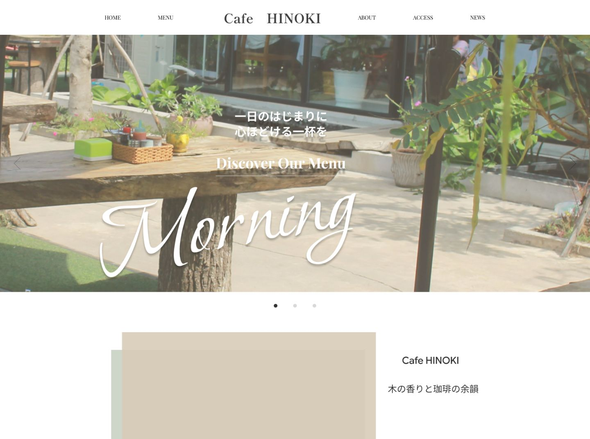

※架空のカフェ「Cafe HINOKI」のWebサイトです（トップページ＋メニューページ）。
Figmaで作ったデザインカンプをもとにコーディングしました。店名・住所・料金は架空のもので、写真は素材写真です。
担当
Design / Coding(Responsive・生成AIを活用)
制作時間
デザイン：約5時間／コーディング：約1日（生成AIを活用）
使用ソフト・技術
Photoshop、Figma（デザイン）、Visual Studio Code・生成AI（コーディング） / HTML・CSS・JavaScript
使用フォント
Cormorant Garamond / Shippori Mincho / Zen Kaku Gothic New / Allura
サイトの目的
ひのきの香りと木の温もりを感じられる、落ち着いたカフェの魅力を伝え、
店舗への来店に繋げることを目的としたサイトです。
ターゲット
落ち着いた空間でゆっくり過ごしたい20～50代の男女をターゲットに設定しました。
カフェでの食事や会話を楽しみたい方だけでなくお一人でゆっくり過ごしたい方にも
利用してもらえることを想定しています。
デザインについて
ひのきの木の温もりや自然の心地よさが伝わるよう、木や植物をイメージした
ナチュラルな色合いを使用しました。写真を大きく見せることで店内の雰囲気や料理の魅力を伝え、
余白を活かした落ち着いたレイアウトに仕上げました。
コーディングでは、カンプの筆記体「Morning」を発展させ、朝・昼・午後の3枚のスライド（Morning／Lunch／Cafe Time）にしました。開いた時間帯のスライドから始まり、新しい写真を前の写真に重ねてふわっと切り替えます。
色は「ひのきの白・ひのきのベージュ・セージ・こげ茶」の4色にしぼり、写真はまわりに余白と細い線をとって、額に入れた絵のように静かに見せています。
セクションごとに見せ方を変え（写真と文章の交互、全面写真の帯、大きな1枚と小さな2枚、文字の一覧）、同じ形のカードが並ぶ単調さを避けました。
落ち着いた雰囲気が地味に見えないよう、自然光の明るい写真を選び、看板メニュー（かためのプリン）を大きく紹介しています。店内のことはセージ色の面で見せてページに強弱をつけ、「#cafehinoki」の写真の並びで、写真を撮りたくなるお店であることを伝えました。
実際のお店で使える工夫
今日の営業状況（営業中／何時から／定休日・臨時休業と次の営業日）を自動で表示し、いまの時間帯のメニューに「ただいまの時間」の印を付けます。
営業時間・定休日・時間帯は設定ファイル1か所で直せるようにし、今後カフェサイトの依頼を受けたときにひな形として使えるよう、色・フォント・写真・メニューの差し替え手順をREADMEにまとめました。
見やすさ（UI/UX・アクセシビリティ）
文字はPCで16px以上・スマートフォンで14px以上にし、文字と背景のコントラストは 4.5:1 以上にしています。
見出しは文節の切れ目で改行し、スライドには一時停止ボタンと左右の矢印を付けました。動きが苦手な方の設定では、自動再生とスクロールの動きを止めます。
今のスライドは色だけでなく形（塗りつぶしと輪）でも区別でき、ページの上へ戻るボタンやメニューページのパンくずリストも、文字で内容がわかるようにしています。
品質の確認
2ページを、スマートフォン・タブレット・PC（360〜1440px）の画面幅で確認しました。
横のはみ出しと文字の大きさはブラウザ上で動かすスクリプトで測り、営業状況の表示は営業中・営業前・営業終了・定休日・臨時休業の5つの状態で試しました。
SEO対策
ページごとの title・description・OGP と、トップページにカフェの構造化データ（JSON-LD）を設定しました。
見出しの階層、画像のalt属性、画像サイズの指定と遅延読み込みにも配慮しています。
デザインカンプ（Figma）

※コーディングの途中で、デザインを一部変更しました。
カンプでは写真の後ろに色の面をずらして重ねていましたが、以前の制作物で使った表現と重なるため、写真のまわりに余白と細い線をとる額縁のような見せ方に変えました。
あわせて、スライドの点は色だけでなく形（塗りつぶしと輪）でも区別できるようにし、一時停止ボタンを加えるなど、アクセシビリティに合わせて調整しています。
また、カンプでは「Morning」1枚だったスライドを、時間帯ごとの3枚（Morning／Lunch／Cafe Time）に増やし、それぞれの時間に合う料理の写真に替えました。
スライドの下には、実際のお店で役立つよう、今日の営業状況を自動で表示する帯を加えています。
見出しはカンプのゴシック体から明朝体に変え、ひのきの落ち着いた雰囲気に合わせました。